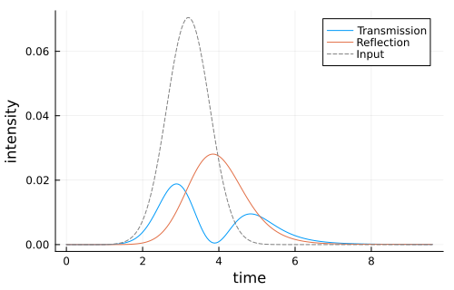

Quantum Pulse Bi-Directional Waveguide
This example mirrors the example Bi-Directional Waveguide but passes numeric operators directly to SLH, circumventing the symbolic derivation part. Furthermore it drives the system with a quantum single-photon pulse via a virtual cavity.
As usual, we start by loading the packages and defining the operators and parameters of the system.
using QuantumInputOutput
using QuantumOptics
using QuantumOpticsBase: dagger
using PlotsN = 2 # number of quantum dots
# numeric Hilbert space
bu = FockBasis(6) # virtual input cavity
ba = NLevelBasis(2)
b_qds = tensor([ba for _ = 1:N]...)
b = bu ⊗ b_qds
# QD operators
σ(i, j, k) = embed(b, i+1, transition(ba, j, k))
# input mode operator
a_u = destroy(bu) ⊗ one(b_qds)
# parameters
γ = 1.0
β = 0.9
γRn = fill(γ * β / 2, N)
γLn = fill(γ * β / 2, N)
γ_add = fill(γ * (1 - β), N)
Δn = fill(0.0, N)
ϕn = fill(π/10, max(N - 1, 0))
# quantum pulse u(t) and virtual cavity coupling g_u(t)
σt = 0.8 # pulse with
t0 = 4σt # pulse peak
Tend = 3t0
T = [0:0.005:1;]*Tend
ΔT = T[2]-T[1]
u1(t) = 1/(sqrt(σt)*π^(1/4)) * exp(-(t - t0)^2 / (2*σt^2))
gu_t = coupling_input(u1, T)We use the SLH to directly use QuantumOptics.jl operators and functions to the model the system.
G_u = SLH(1, t -> gu_t(t) * a_u, 0*one(b))
G_ϕ(i, j) = SLH(exp(1im * ϕn[i]), 0*one(b), 0*one(b))
G_R(i) = SLH(1, √(γRn[i]) * σ(i, 1, 2), -Δn[i] * σ(i, 2, 2))
G_L(i) = SLH(1, √(γLn[i]) * σ(i, 1, 2), 0*one(b))
# Cascade right-moving channel
G_R_t = G_u ▷ G_R(1) ▷ G_ϕ(1, 2) ▷ G_R(2)
# Cascade left-moving channel (reverse order)
G_L_t = G_L(2) ▷ G_ϕ(1, 2) ▷ G_L(1)
G_t = G_R_t ⊞ G_L_tThe full Hamiltonian and Lindblad terms are extracted from the final SLH element. Note that as soon as one time-dependent function is involved in a cascade or concatenate, the returned $H$ and $L$ will also be time-dependent.
H = hamiltonian(G_t)
L = jump_operator(G_t)
L_R = L[1]
L_L = L[2]
J_add = [√(γ_add[i]) * σ(i, 1, 2) for i = 1:N]
function input_output(t, ρ)
Ht = H(t)
J = [L_R(t), L_L(t), J_add...]
return Ht, J, dagger.(J)
end# time evolution
α0 = √(0.1) # √ of total photon number
ψ0 = coherentstate(bu, α0) ⊗ tensor([nlevelstate(ba, 1) for _ = 1:N]...)
t, ρt = timeevolution.master_dynamic(T, ψ0, input_output)# transmitted and reflected intensity
I_R = zeros(length(t))
I_L = zeros(length(t))
for (i, ti) in enumerate(t)
LR = L_R(ti)
LL = L_L(ti)
I_R[i] = real(expect(LR' * LR, ρt[i]))
I_L[i] = real(expect(LL' * LL, ρt[i]))
endp = plot(t, I_R; label = "Transmission")
plot!(p, t, I_L; label = "Reflection")
plot!(p, t, abs2.(α0*u1.(t)); color = :grey, ls = :dash, label = "Input")
plot!(
p;
xlabel = "time",
ylabel = "intensity",
legend = :best,
grid = true,
size = (500, 320),
)
p
Package versions
These results were obtained using the following versions:
using InteractiveUtils
versioninfo()
using Pkg
Pkg.status(["QuantumInputOutput", "QuantumOptics", "Plots"], mode = PKGMODE_MANIFEST)Julia Version 1.13.0
Commit d1c37793dd2 (2026-09-09 19:00 UTC)
Build Info:
Official https://julialang.org release
Platform Info:
OS: Linux (x86_64-linux-gnu)
CPU: 4 × AMD EPYC 7763 64-Core Processor
WORD_SIZE: 64
LLVM: libLLVM-20.1.8 (ORCJIT, znver3)
GC: Built with stock GC
Threads: 4 default, 1 interactive, 4 GC (on 4 virtual cores)
Environment:
JULIA_PKG_SERVER_REGISTRY_PREFERENCE = eager
JULIA_DEBUG = Documenter
JULIA_NUM_THREADS = auto
Status `~/work/QuantumInputOutput.jl/QuantumInputOutput.jl/docs/Manifest.toml`
⌅ [7d9fca2a] Arpack v0.5.3
[d38c429a] Contour v0.6.3
⌅ [82cc6244] DataInterpolations v9.5.0
[459566f4] DiffEqCallbacks v4.19.3
[77a26b50] DiffEqNoiseProcess v5.36.3
[c87230d0] FFMPEG v0.4.5
[7a1cc6ca] FFTW v1.10.0
⌅ [53c48c17] FixedPointNumbers v0.8.6
[069b7b12] FunctionWrappers v1.1.3
[28b8d3ca] GR v0.73.27
[42fd0dbc] IterativeSolvers v0.9.4
[1019f520] JLFzf v0.1.11
[682c06a0] JSON v1.8.0
[0b1a1467] KrylovKit v0.10.4
[b964fa9f] LaTeXStrings v1.4.1
[23fbe1c1] Latexify v0.16.12
[7a12625a] LinearMaps v3.11.4
[442fdcdd] Measures v0.3.3
[77ba4419] NaNMath v1.1.4
[e7bfaba1] NumericalIntegration v0.3.4
[1dea7af3] OrdinaryDiffEq v7.8.1
[1344f307] OrdinaryDiffEqLowOrderRK v2.2.5
[ccf2f8ad] PlotThemes v3.3.0
[995b91a9] PlotUtils v1.4.4
[91a5bcdd] Plots v1.41.7
[aea7be01] PrecompileTools v1.3.4
[18f9eda6] QuantumInputOutput v0.5.3 `~/work/QuantumInputOutput.jl/QuantumInputOutput.jl`
[6e0679c1] QuantumOptics v1.2.9
[4f57444f] QuantumOpticsBase v0.5.15
[3cdcf5f2] RecipesBase v1.3.4
[01d81517] RecipesPipeline v0.6.12
[731186ca] RecursiveArrayTools v4.5.1
[189a3867] Reexport v1.2.2
[05181044] RelocatableFolders v1.0.1
[ae029012] Requires v1.3.1
[0bca4576] SciMLBase v3.53.2
[6c6a2e73] Scratch v1.3.0
⌅ [f7aa4685] SecondQuantizedAlgebra v0.11.0
[992d4aef] Showoff v1.1.1
[276daf66] SpecialFunctions v2.9.0
[90137ffa] StaticArrays v1.9.20
[10745b16] Statistics v1.11.5
[2913bbd2] StatsBase v0.34.13
[789caeaf] StochasticDiffEq v7.2.0
[d1185830] SymbolicUtils v4.46.4
[0c5d862f] Symbolics v7.39.2
[1cfade01] UnicodeFun v0.4.1
[41fe7b60] Unzip v0.2.0
[2a0f44e3] Base64 v1.11.0
[ade2ca70] Dates v1.11.0
[f43a241f] Downloads v1.7.0
[37e2e46d] LinearAlgebra v1.13.0
[44cfe95a] Pkg v1.13.0
[de0858da] Printf v1.11.0
[3fa0cd96] REPL v1.11.0
[9a3f8284] Random v1.11.0
[2f01184e] SparseArrays v1.13.0
[fa267f1f] TOML v1.0.3
[cf7118a7] UUIDs v1.11.0
Info Packages marked with ⌅ have new versions available but compatibility constraints restrict them from upgrading. To see why use `status --outdated -m`This page was generated using Literate.jl.